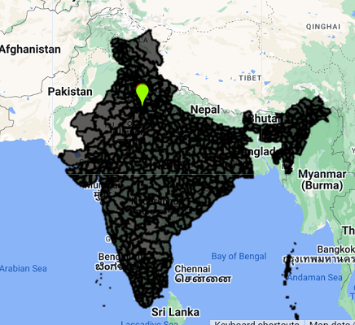
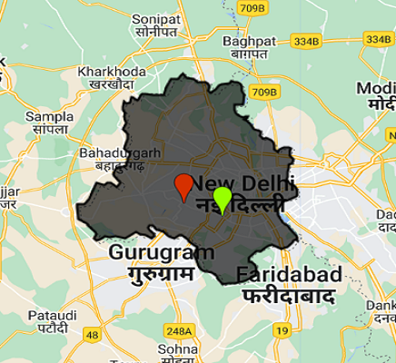
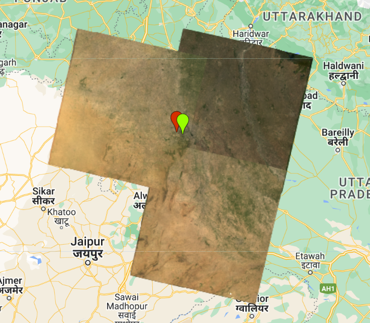
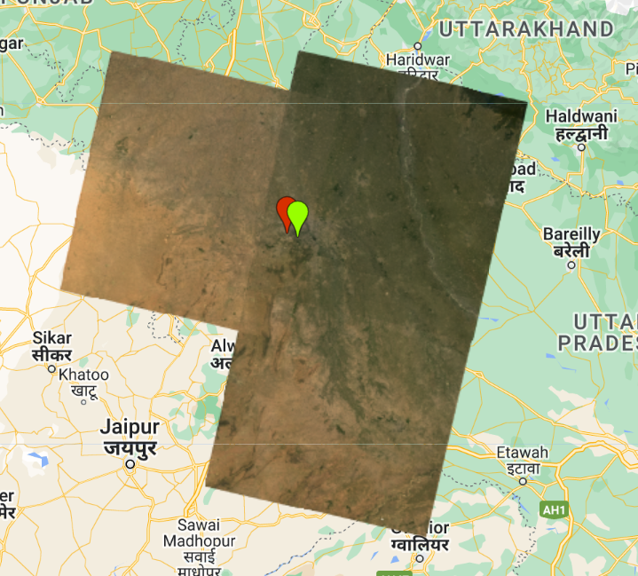

// Loading a feature collection
var India = ee.FeatureCollection('projects/ee-lwdfish/assets/gadm41_IND_2')
print(India, "India");
Map.addLayer(India, {}, "India");
//Loading just one polygon for point
var Dheli = ee.FeatureCollection('projects/ee-lwdfish/assets/gadm41_IND_2')
.filter('GID_1 == "IND.25_1"');
print(Dheli, "Dheli");
Map.addLayer(Dheli, {}, "Dheli");Google Earth Engine
Summary
Google Earth Engine (GEE) is a platform for scientific analysis and visualization of geospatial data sets for academic, public interest, corporate and government users. It is an online software that stores data on servers, and the code is run on the client side - browser. Because of this characteristic, GEE can achieve geospatial analysis with massive data sets within seconds, which gives it a huge advantage. Some terms in GEE have been renamed, for example, the raster and vector data are called “Image” and “Feature” in GEE. And GEE uses the website programming language - Javascript to conduct.
Source: Bikesh Bade
Now, let’s turn to begin the GEE in action! The first thing we need to know what GEE code editor looks like and its function. In general, it has four parts: The bottom of the page is the map, which you can slide and mark randomly; the middle of the top is the code editor, the left side of it mainly displays the online project you created and the uploaded files, and the right side is the output area.
Source: Andy MacLachlan
After understanding the GEE code editor pages, turning to some methods and coding.
Loading feature collection
If we want to know the geometries and features of an area, we can upload the shapefile and load it, which can output a feature collection (India). If we just want the polygon and single point rather than the whole area, we can filter it (Dheli).


Source: output from Wendi Li
Mosaic images
When we look at images, it may be very apparent differences between the tiles (spatial mosaic), which is probably due to the date of collection and the atmospheric correction applied(Andy MacLachlan). To deal with this “mosaic images”, we can take the average value (mean).
// Before averaging: Mosaic images
var mosaic = oneimage_study_area_cloud_scale.mosaic();
var vis_params2 = {
bands: ['SR_B4', 'SR_B3', 'SR_B2'],
min: 0.0,
max: 0.3,
};
Map.addLayer(mosaic, vis_params2, 'spatial mosaic');
// After averaging
var meanImage = oneimage_study_area_cloud_scale.mean();
Map.addLayer(meanImage, vis_params2, 'mean');

Source: output from Wendi Li